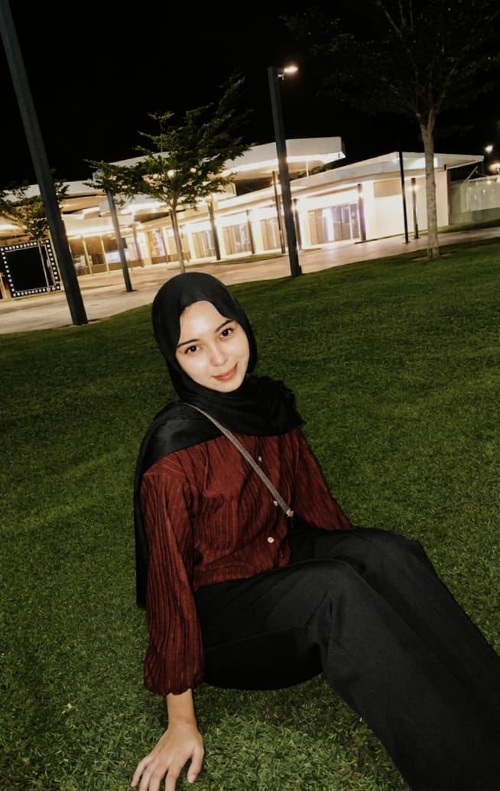
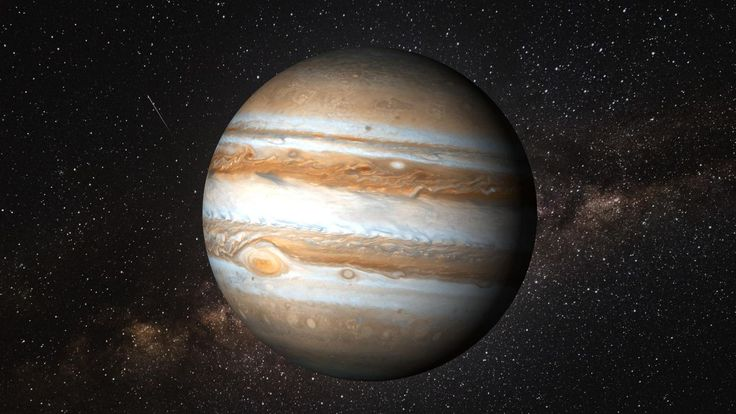
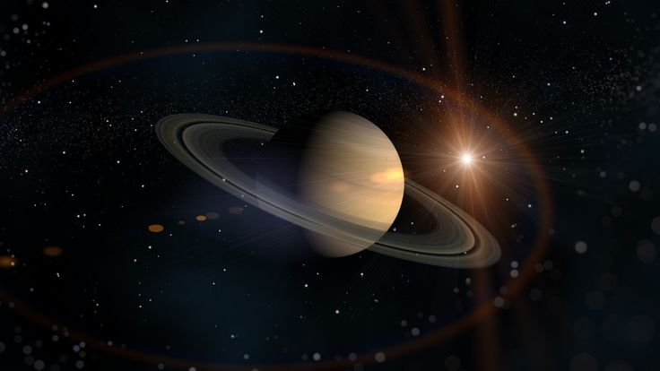
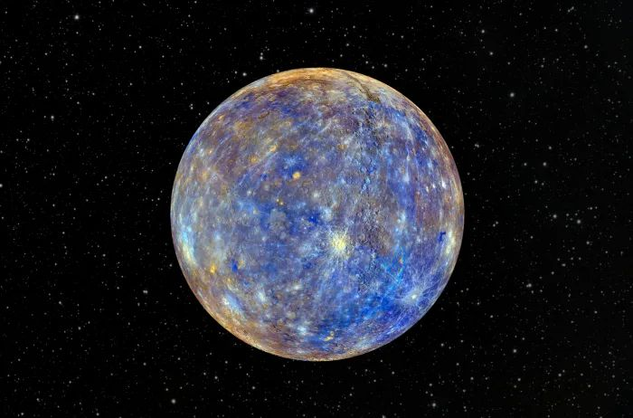
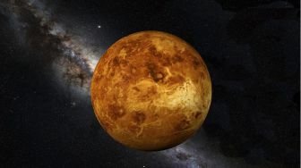

Jupiter, tidak seperti planet berbatu seperti di bumi, tidak memiliki permukaan padat dalam pengertian tradisional. sebagai raksasa gas, ia lebih mirip bola gas yang berputar-putar. pita dan bintik-bintik indah yang kita lihat sebenarnya adalah awan tebal dan dingin yang terbuat dari amonia dan air, yang mengapung tinggi di atmosfer jupiter yang masif yang terdiri dari hidrogen dan helium. lebih dalam lagi, tekanan yang sangat besar kemungkinan mengubah hidrogen menjadi keadaan logam cair. jadi, meskipun kita tidak dapat mendarat di permukaan padat di jupiter, ada banyak hal yang terjadi di bawah lapisan awan yang berputar-putar itu.
Read MoreSaturnus adalah planet keenam di tata surya kita dan yang terbesar kedua di antara raksasa gas. Planet ini terkenal karena sistem cincinnya yang menonjol yang terdiri dari partikel es, puing-puing batuan, dan debu. Saturnus telah diamati sejak zaman kuno dan dinamai menurut nama dewa pertanian Romawi kuno. Planet ini memiliki sistem cincin terluas di tata surya dan catatan jumlah bulan yang diketahui, dengan setidaknya 86 satelit.
Read More

Merkurius adalah planet terkecil dan terdekat dengan Matahari di tata surya kita. planet ini dinamai menurut dewa Romawi Merkurius dan tidak memiliki satelit. permukaan Merkurius dipenuhi banyak kawah, dan juga memiliki medan magnet yang lemah. planet ini ditemukan pada abad ke-18 dan menjadi planet pertama yang ditemukan menggunakan teleskop. Panjang satu hari di Merkurius sekitar 59 hari dan satu tahun berlangsung sekitar 88 hari. Atmosfer di Merkurius sangat tipis, yang membuatnya cukup dingin.
Read MoreVenus adalah planet kedua dari Matahari di Tata Surya kita, yang tidak memiliki satelit. Planet ini dinamai menurut dewi Romawi kuno Venus, dewi kecantikan. Venus adalah planet terpanas di atas Tata Surya kita: suhu permukaannya mencapai 870 derajat Celcius, lebih tinggi daripada planet lain manapun. Atmosfer Venus, yang sebagian besar terdiri dari karbon dioksida, sangat padat sehingga tekanan di permukaannya sekitar 90 kali lipat tekanan di Bumi. Permukaan planet ini ditutupi oleh ribuah kawah Vulkanik.
Read More